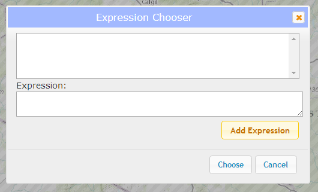

This tool is an exploratory tool which performs simple calculations on multiple map layers for a small area of interest.
Map Algebra
This tool allows you to perform simple calculations on multiple map layers for a defined area of interest.
Step 1
Click on the "Choose Rasters" button. A window will open listing all available categories. Each category will expand when clicked to show layers of interest. Choose the layers that you will want to use in your calculations. For more information on the data, click the "Description" link to display layer source information and metadata.
Step 2
Click on the "Build an Expression" button to open the Expression Chooser window. To add an expression, click the "Add Expression" button to open the Custom Expression window.
Choose a right layer or expression by clicking the dropdown, select one of the operators (addition, subtraction, multiplication, or division) and a left layer or expression. Your expression will be displayed in the textbox below. Add the expression by clicking the "Add" button.
You can add more expressions in the same way or chain expressions together by choosing a custom expression as your right or left argument. Once you have built your final expression, select it by clicking on the title. You will see the full expression expanded in the textbox below. Click the "Choose" button to select this expression.
Step 3
Click either the "Choose Point" or the "Draw Polygon" buttons.
The "Choose Point" button will open a dialog box. Select a distance and choose either Miles or Kilometers, then click "Choose Point". Now, click on the map. A buffer of the specified distance will be drawn around your point and your expression will be calculated.
The "Draw Polygon" button will start the draw polygon process. Click on the map to start drawing and double-click to auto-complete the polygon and perform your calculation.
Results
The results of your calculation will be displayed on the map and statistics will be displayed in the left panel under the "Results" section. You can download the results of this calculation as a TIF raster by clicking the "Download Raster Data" button. This data is intended to be used in ArcMap or other GIS platforms. You can also clear the map to begin with a new calculation by clicking the "Clear" button.
Layer Picker
Choose a layer to display by selecting it from the layer picker drop-down.
Legend
The will automatically populate when a layer is added or removed from the map, including custom layers that are the result of calculations.
Data Source
Click the "Toggle Citation" button for more information on the source data used in the application.
Basemap picker
Click the basemap button to toggle between the topographic basemap and a satellite imagery basemap.